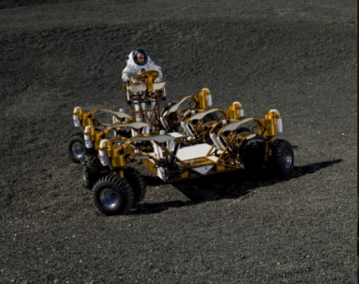

月球车进化论（二）
二、重返月球竞争中的豪华车时代
美苏太空争霸时代两国更看重宇航员登陆月球的政治意义，能够实现月面采样已经足够了。不过今天的形势已经大不相同，月球上丰富的核聚变原料成为各国追求的目标，于是“探月俱乐部”重新兴起，各主要国家纷纷加入到探月的行列中来，美国更是雄心勃勃地提出不但要在2020年“重返月球”，而且要建立月球基地，实现在月球上永久驻扎，并以月球为跳板对更深处的宇宙进行探索，比如派宇航员前去探索火星。
在月球表面开车可不是件容易的事情，即使阿波罗计划中几小时的短途旅行，也需要宇航员在沙漠中的模拟地形上联系几个月才能通过“路考”，因为月面情况实在是太特殊了。月球表面重力只有地球的六分之一，且布满一层松软的土壤，这让车辆的行进效率大打折扣。月面的崎岖不平对车辆的轮子、底盘设计形成重重障碍，转弯、爬坡是寻常事，月亮上面，安全第一。月亮上一天等于地球上的一个月，温差变化达到300多度，“白天”阳光炙烤，夜晚严寒能冻坏石头，这就对车辆的材料提出了高难度的要求。阿波罗计划的月球漫游车采用的就是以钢琴线保持弹力的网眼式轮胎。
月球基地意味着更为繁重的劳动，为此美国宇航局特地设计了“月球载重车”（lunar truck）。这种车辆与阿波罗计划中的漫游车一样，也是敞篷车，宇航员需要身着宇航服才能驾驶。载重车说白了就是用来运送大宗货物，为了满足月球基地建设的要求，美国宇航局还打算在车上附加其他设备，如铲车或者起重机。载重车将有6个轮子，每个轮子有两个轮胎。这种突破传统的“六轮设计”已经在火星车运行中得到了检验，即使其中一个轮子出现故障，另外5个轮子仍然具有优越行动能力。轮子本身可以实现360度独立旋转，这种设计赋予载重车前所未有机动性能，可以向任何一个方向前进。为了适应不同的地形，载重车的底盘可以降低或者升高，设计的举力可以达到2吨，未载货是的速度可以达到25公里/小时。

月球载重车已经由设在休斯敦的约翰逊航天中心设计出原型，并在模拟月球场地上进行试验。
美国宇航局的另外一款新产品则着眼于驻扎月球的宇航员的舱外活动，即“小型充压漫游车”（Small Pressurized Rover），由于不再是敞篷，密封的舱室使得宇航员在驾驶这种车辆时不需要再穿着宇航服。这种漫游车的长宽高均逾4米，重量可达4吨，载重也相当，最多可以在乘坐4名宇航员的情况下保证3天的连续活动。这意味着一辆充压漫游车其实就是一个小型的工作站，其活动范围可达240公里，并不比载重车差。
漫游车里有一个小型浴室，装有喷雾喷头可以用海绵擦身。每个宇航员都有自己的私人空间，用帘子隔开。不过食物只有泡面等方便食品，因为车里没有厨房。在亚利桑那沙漠中进行模拟检验时，宇航员格哈特甚至认为这种漫游车象航天飞机一样舒服。由于人性化的接口设置，宇航员可以不经过减压或加压装置而直接进入月球基地或进入宇航服，这一点一定会让阿波罗计划的宇航员羡慕不已。
除了载人月球车，美国宇航局也在发展无人驾驶的月球车，也就是可以在月面自动工作的机器人，如ATHLETE。这也是一种六轮机器人，第一代原型直径大于4米，设计者希望它可以在相当广大的地区快速滚动或者行走，最终目标则是设计一套可以与其他专门仪器相结合或加载的多目标系统。ATHLETE的载重能力约450公斤，多个机器人相匹配的结果可以产生更大的运输能力。
印度太空研究组织也发表了一款遥控无人月球漫游车，计划在2013年由“月船二号”携带在月面着陆。这款漫游车采用俄式设计，重58公斤，六轮驱动，将在月面极地附近进行为期约一年的科学考察，其行使速度约为每小时5.7公里，活动范围可达方圆150公里。
其实，不仅美国、俄罗斯、欧盟、日本、印度等国提出了自己的月球车模型，就连许多民间机构也不甘寂寞，比如谷歌公司就拿出了2000万美元设立“谷歌月球X大赛”，鼓励民间团体或公司自行设计月球车，能够在月面着陆并拍照后还能行进500米，便可以获得大奖。目前为止已经有约20支队伍参赛，提出了各种富有想象力的设计理念和模型。